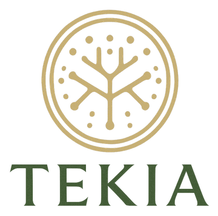

De dónde viene
- Especie
- [pendiente]
- Parte usada
- [pendiente]
- Procedencia
- [pendiente de documentar]
- Análisis del lote
- [pendiente]


La misma historia, contada tres veces. Entra por donde quieras, o baja despacio.
Un hongo no es solo lo que se ve. Lo que se usa, cómo se prepara y qué se ha estudiado cambian según la parte.
[video o fotografía real del cultivo, pendiente]
Antes de ser polvo fue una red que creció despacio, un cuerpo que salió a la luz, una cosecha. Este es su camino.
Hay momentos que piden volver.A tu ritmo.A tus sentidos.A ese espacio que también es tuyo.
Preparar una bebida caliente puede ser una pausa. Lo que hagas con ese momento es tuyo.
Entrar en el ritual¿Tienes dudas antes de elegir? Escríbenos y te respondemos con calma.
Este acompañamiento no sustituye la consulta con un profesional de la salud.